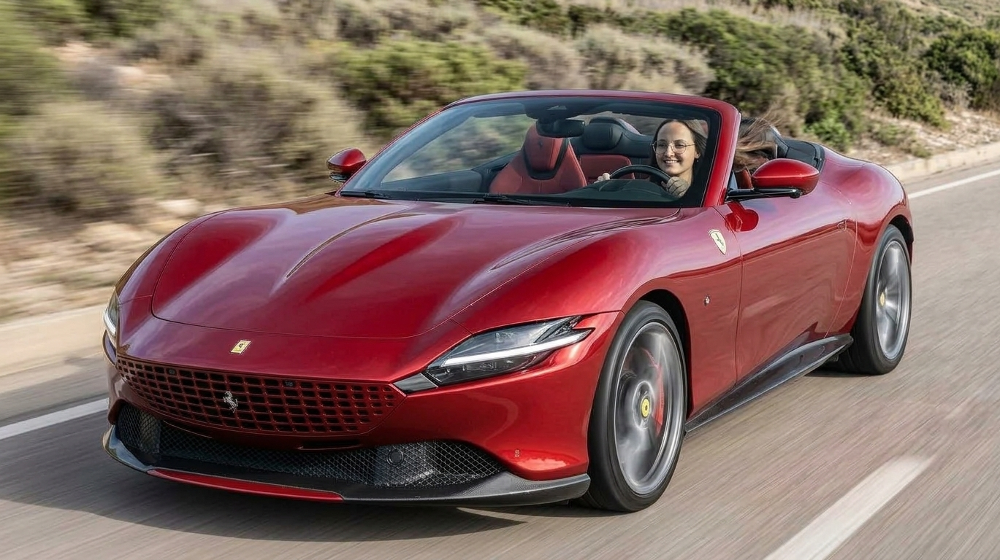
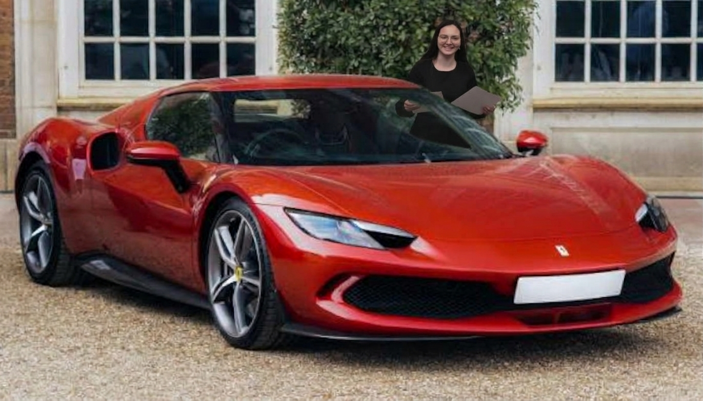
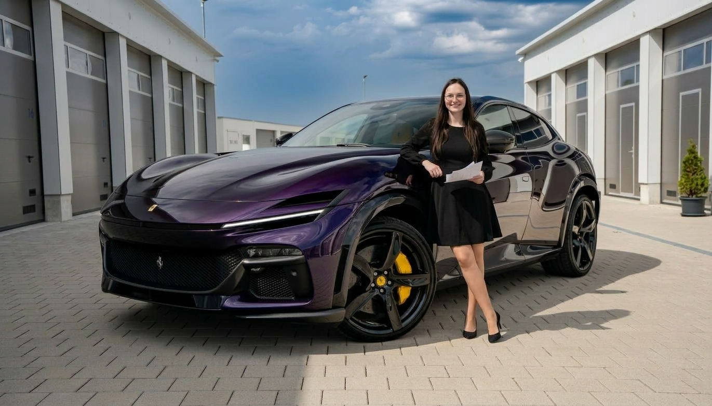

Общее сравнение трёх моделей
| Характеристика | Ferrari Roma | Ferrari 296 GTB | Ferrari Purosangue |
|---|---|---|---|
| Тип двигателя | Бензиновый V8 | Гибридный V6 | Бензиновый V12 |
| Расход топлива | ~11.2 л/100 км | ~6.4 л/100 км | ~17.3 л/100 км |
| Тип КПП | Роботизированная | Роботизированная | Роботизированная |
| Передач | 8 | 8 | 8 |
| Габариты (Д×Ш×В) | 4656×1974×1301 | 4565×1958×1187 | 4973×2028×1589 |
| Багажник | 255 л | 201 л | 473 л |
| ABS / ESP | Есть | Есть | Есть |
| Подушки | Есть | Есть | Есть |
| Euro NCAP | Нет данных | Нет данных | Нет данных |
| Разгон 0–100 | 3.4 с | 2.9 с | 3.3 с |
| Макс. скорость | 320 км/ч | 330 км/ч | 310 км/ч |
| Цена | ~€222 000 | ~€269 000 | ~€390 000 |
| Wi-Fi / Bluetooth | Bluetooth / опц. Wi-Fi | Bluetooth / опц. Wi-Fi | Bluetooth / опц. Wi-Fi |
| Тормоза | Дисковые | Дисковые | Дисковые |
| AEB | Есть | Есть | Есть |
| Гарантия | 3 года | 3 года + 7 лет ТО | 3 года |
Результат сравнения
- Roma – самый доступный и сбалансированный вариант.
- 296 GTB – самый быстрый и экономичный (гибрид).
- Purosangue – самый практичный и мощный (V12).
Ferrari Roma

Ключевые параметры
| Параметр | Значение |
|---|---|
| Двигатель | V8 3.9 л Twin-Turbo |
| Мощность | 620 л.с. |
| Разгон 0–100 | 3.4 с |
| Макс. скорость | 320 км/ч |
| Багажник | 255 л |
| Цена | ~€222 000 |
Раскрывающаяся информация
Ferrari 296 GTB

Ключевые параметры
| Параметр | Значение |
|---|---|
| Двигатель | Гибрид V6 3.0 л + электро |
| Мощность | 830 л.с. (суммарно) |
| Разгон 0–100 | 2.9 с |
| Макс. скорость | 330 км/ч |
| Багажник | 201 л |
| Цена | ~€269 000 |
Раскрывающаяся информация
Ferrari Purosangue

Ключевые параметры
| Параметр | Значение |
|---|---|
| Двигатель | V12 6.5 л атмосферный |
| Мощность | 725 л.с. |
| Разгон 0–100 | 3.3 с |
| Макс. скорость | 310 км/ч |
| Багажник | 473 л |
| Цена | ~€390 000 |